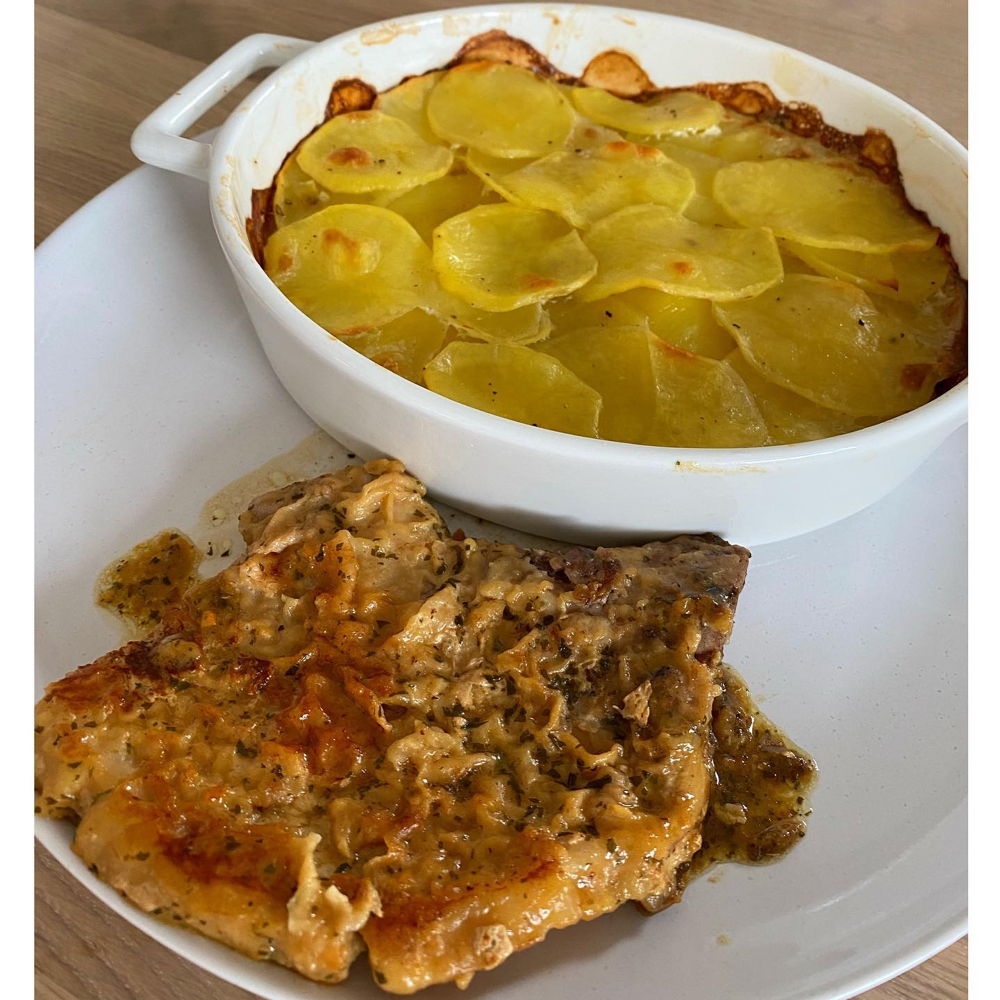

Citrónová omáčka podľa @hubneme_s_petou — Normy Jedál
Kotleta v citrónové omáčce a gratinované brambory
Na 1 porci potřebujeme:
1 kotletu
Mouku na obalení (vychází to na 5g)
Olej na opečení 5ml ( já dala slunečnicový)
Sůl, sušenku petržel 1 lžičku
šťáva z 1/4 citrónu
150ml horké vody
5g másla
1/4 zeleninového bujónu ( nebo domácí směs do polévky kdo má)
Na gratinované brambory:
350g brambor na plátky (já dala do robota)
50ml sójové smetany na vaření
Sůl, čerstvý rozmarýn
Nejdříve si zapnete troubu na 200 stupňů. Plátky brambor v misce osolte a promíchejte. Dejte do zapekací misky (cca 1cm na to půlku sójové smetany a rozmarýn nakrajený na kousky) pak přijde další vrstva brambor, zase zalijeme smetanou, malinko ještě posolíme a dáme poslední tenkou vrstvu brambor.
Pečeme pod alobalem 40min, pak odklopíme a necháme dopéct, aby se udělala kůrčička.
Maso si naklepeme z obou stran, pořádně osolíme a obalíme v hladké mouce. Na oleji opečeme z obou stran do zlatova, pak přidáme horkou vodu rozmíchanou s bujónem, citrón a necháme zredukovat na polovinu. Ke konci přidáme petržel a oříšek másla.
Celé jídlo vychází cca na 650kcal.
Dobrou chuť 👌😊
Recept od mého miláčka ❤️
#fitnessrecept #fitnessrecepty #healthyfood #lunch #inspiracenaobed #dobrota #varime #peceme #kotleta #gratinovanebrambory
#citronovaomacka #sveziobed